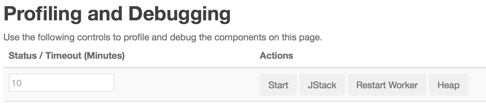

マルチテナントモードでは、ユーザーにsudoアクセスすることなく、長期間実行されるJVMをクラスタ全体で起動します。これらのJVMに対するJavaヒープ・ダンプ、jstacks、およびJavaプロファイリングのセルフ・サービスは、ユーザーが能動的にモニタリングする際に、問題を分析・デバッグする能力を向上させます。
Stormの動的プロファイラを使用すると、ストッククラスタ上で実行されているワーカーのjvmにおけるヒープダンプ、jprofileまたはjstackを動的に取得できます。ユーザーはこれらのダンプをブラウザーからダウンロードし、お気に入りのツールを使用して解析することができます。UIコンポーネント・ページには、各コンポーネントにおけるワーカーの一覧と、それらに対するアクションボタンが用意されています。 logviewerを使用すると、これらのログによって生成されたダンプをダウンロードできます。 詳細はスクリーンショットをご覧ください。
ヒープ・ダンプ、jstack、jprofileの開始/停止/ダンプ、またはワーカーの再起動を要求するには、実行中のトポロジをクリックのうえ特定のコンポーネントをクリックします。次に、表"Executors"でワーカーのエグゼキュータのボックスをチェックしてワーカーを選択します。さらに、"Profiling and Debugging"セクションの "Start"、 "Heap"、 "Jstack"または "Restart Worker"をクリックします。

表"Executors"で、エグゼキュータの隣にある列"Actions"のチェック・ボックスをクリックすると、同じワーカーに属する他のエグゼキュータが自動的に選択されます。アクションが完了すると、作成された出力ファイルは列"アクション"のリンクに表示されます。

jprofileを開始するには、タイムアウトを分単位で指定します（必要でない場合はとする10）。次に、「開始」をクリックします。
jprofileログを停止するには、“Stop”ボタンをクリックします。 これによりjprofileの統計情報がダンプされ、プロファイリングが停止されます。行をUIから消すには、ページを更新します。
My Dump Files"をクリックして、ワーカー固有のダンプファイルのリストを表示するためのログビューワーのUIを表示できます。
"worker.profiler.command"は、特定のプラグイン可能なプロファイラ、heapdumpコマンドを指すように設定できます。プラグインが利用できない場合、またはjdkがJprofileのフライト記録をサポートしていない場合、"worker.profiler.enabled"を無効にすることができます。このため、ワーカーJVMオプションには"worker.profiler.childopts"がありません。別のプロファイラプラグインを使用するには、これらの設定を変更してください。